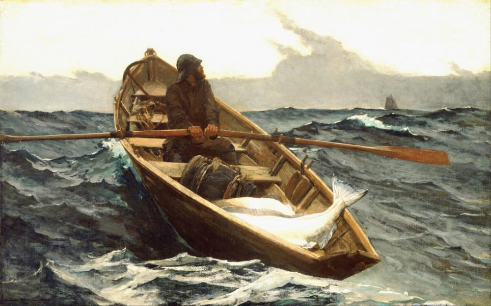
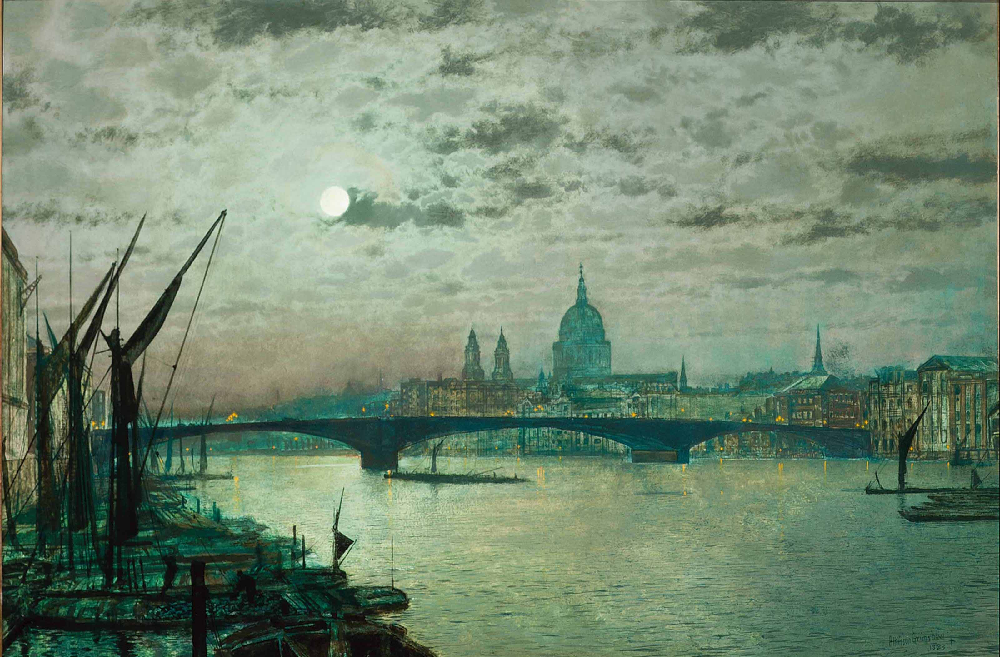
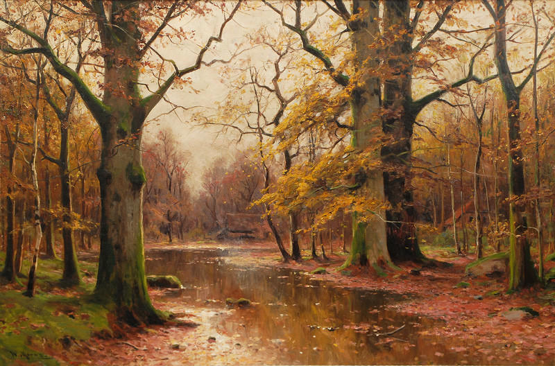

Old Poems
c.2014/2015
#1
Independent man
In the middle of a lake
Rowing a canoe
#2
Beautiful
A rainbow in the grey night
Shines bright in moonlight
#3
The silent river
The trinkling of water
Sand under my toes
#4
The old man sat there
Rocking his old rocking chair
Wondering, thinking...
Lantern
Day,
Grey Day
So gloomy...
Sun going down
Night...
Town at Night
Leaves fall quietly
Wind blows softly through the night
Everyone asleep


